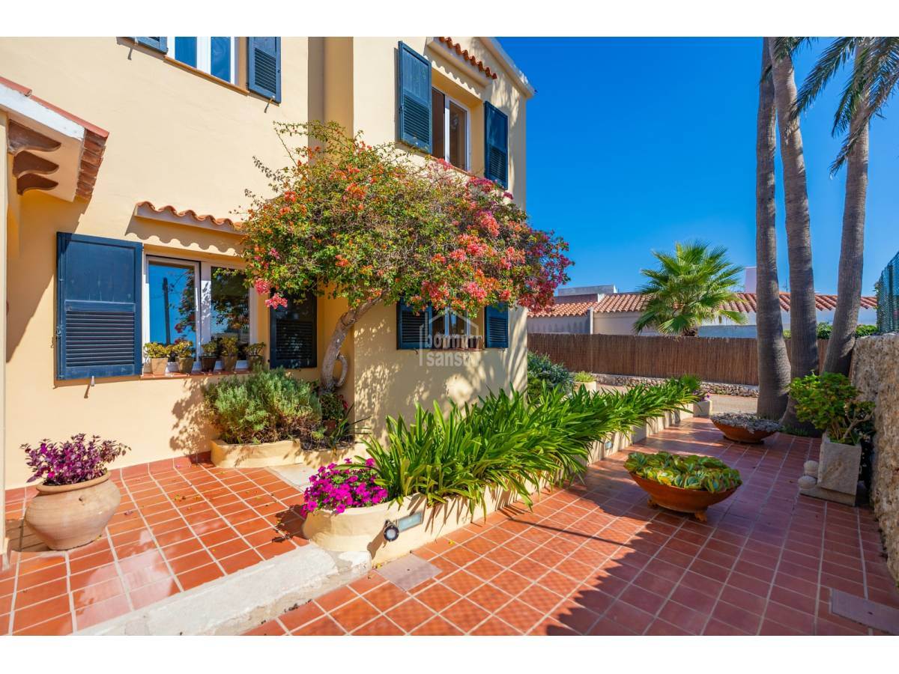

€890.000
Son Vilar, Es Castell, Menorca, Spain
Open the listingDesign-forward with cozy character minutes from Mahón/Es Castell: ochre stucco, navy mallorquina shutters, bougainvillea patio, wood-burning stove and a large built private pool with BBQ and wood oven. Distinct from board noria-riera-34486 and trebaluger set.
Opened 10 Sep 2026. Asking 890.000 €. Specs: 4/3 / 229 m² / 586 m² + Pool. Copy: Son Vilar peaceful street; living-dining with wood stove and A/C; large pool, covered terraces, garden, BBQ, wood-fired oven. Hero shows ochre facade and navy shutters (pool confirmed on card + description). Not a fixer.